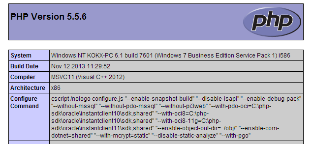
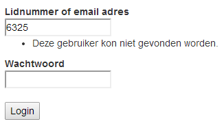

This is all based on Windows. So if you run Mac (yes, I'm talking about you, Jim), don't try to install the same things.
Fortunately, most of these things are much easier to install on Mac.
You might want to take a look at: http://akrabat.com/computing/setting-up-php-mysql-on-os-x-mavericks/
Apache, PHP, MySQL
C:\xampp\php\php.inizend_extension = "C:\xampp\php\ext\php_xdebug.dll"
[XDebug]
zend_extension = "C:\xampp\php\ext\php_xdebug.dll"
;xdebug.profiler_append = 0
;xdebug.profiler_enable = 1
;xdebug.profiler_enable_trigger = 0
;xdebug.profiler_output_dir = "C:\xampp\tmp"
;xdebug.profiler_output_name = "cachegrind.out.%t-%s"
;xdebug.remote_enable = 0
;xdebug.remote_handler = "dbgp"
;xdebug.remote_host = "127.0.0.1"
;xdebug.trace_output_dir = "C:\xampp\tmp"
Start Apache and MySQL. The other services are not needed.
If get a Windows Firewall alert, just allow everything.
Create a file with the following contents and save it as
C:\xampp\htdocs\test.php
<?php
phpinfo();
Go to http://localhost/test.php
You should see something like:

;C:\xampp\mysql\bin;C:\xampp\php; to the end.Because we changed the PATH, we need to reboot windows.
We will simply install GitHub for Windows, because that does everything we need.
So, in the meanwhile, it is a good idea to create an account at github.com.
Open the 'GitHub' program. And login with the account you just created.
Find the repo GEWIS/gewisweb, and fork it on your GitHub account.
Open the GitHub program, find the repository, right mouse click and clone it to C:\xampp\htdocs
Go to localhost/gewisweb/public/.
Just do what it says!
gewisweb repository -> open a shell herephp composer.phar installThe frontpage is working. But we still have some things to configure.
gewisweb_dev
In the gewisweb config autoload directory (C:\xampp\htdocs\gewisweb\config\autoload),
copy doctrine.local.php.dist to doctrine.local.php and open it.
Fill in the username, password and database name
This should be root, no password and gewisweb_dev
<?php
return array(
'doctrine' => array(
'connection' => array(
'orm_default' => array(
'driverClass' =>'Doctrine\DBAL\Driver\PDOMySql\Driver',
'params' => array(
'host' => 'localhost',
'port' => '3306',
'user' => 'root',
'password' => '',
'dbname' => 'gewisweb_dev',
)
)
)
)
);
./vendor/bin/doctrine-module orm:schema-tool:createGo to localhost/gewisweb/public/user and try to login with any number and password (longer than 8 chars). It should give:
Tell me when there are any errors!
In the gewisweb config autoload directory (C:\xampp\htdocs\gewisweb\config\autoload),
copy zdt.local.php.dist to zdt.local.php.
It only takes 15 minutes!